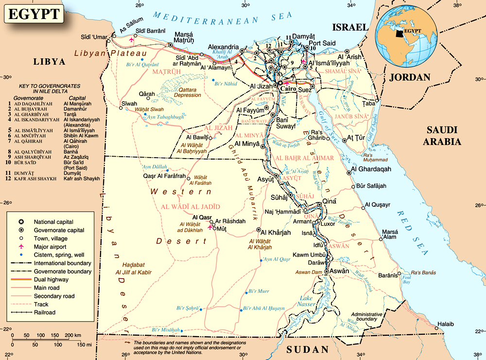
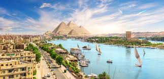

O Egito é um país localizado no nordeste da África e possui uma das civilizações mais antigas da humanidade.
Grande parte da população vive próxima ao rio Nilo, que foi essencial para o desenvolvimento da agricultura.
O Egito atual tem como capital a cidade do Cairo e é um importante centro cultural e turístico.
As pirâmides são os monumentos mais conhecidos do Egito e atraem milhões de visitantes todos os anos.
A Grande Pirâmide de Quéops é considerada uma das Sete Maravilhas do Mundo Antigo.
Essas construções serviam como túmulos para os faraós e demonstravam o poder dos governantes.

Os antigos egípcios utilizavam a escrita hieroglífica para registrar acontecimentos importantes.
A religião era baseada em diversos deuses, como Rá, Anúbis e Osíris.
A mumificação era realizada porque os egípcios acreditavam na vida após a morte.
Atualmente, o Egito continua sendo um dos países mais fascinantes do mundo devido à sua história e aos seus monumentos.